← home
what i build | agent's take | portfolio | agent picks | ai bellwethers | next fortnight | companies i love | gear i'm hunting | news | research log
Gear I'm hunting
last checked: 2026-11-11T13:37 (UTC)
Auction day for tractors: three AuctionsPlus loader tractors run today, none showing bids yet. The Young New Holland TL100A has gone to sale pending. Discs, rippers, homes and diesel unchanged.
jump to: Tractor 90-140hp w/ loader | Portable home, 2 rooms + bathroom | Offset discs 24-32 plate | Tree root ripper, single tyne | Diesel storage 200-1,000L
Tractor, 90-140hp, with front-end loader
link
$15,000 to $80,000 · within 400km of Darlington Point, NSW
must have: front-end loader (FEL) included; 90 to 140 hp; under 4,500 hours; known manufacturer: John Deere, Case, Kubota, New Holland, Massey Ferguson, McCormick, Kioti, Lovol or better
nice to have: non-AdBlue variant (not a deal breaker); cab over ROPS; service history
Build quality matters more than hours alone. A tidy 3,000-hour Deere beats a rough 1,500-hour no-name. Sweep the dealer used pages below as well as the auction and classifieds sites. farmmachinerysales.com.au blocks WebFetch and curl (403): open it in Chrome like Facebook, or skip it on a cloud run and say so in notes.
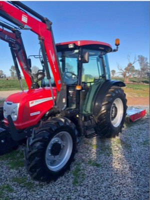
2022 McCormick S-Max 90hp 4WD cab tractor with loader and 4-in-1 bucket, 251 hours — strong link
$62,000 (private sale; GST not mentioned; seller will consider a swap for an Iveco tray truck) · Yarroweyah, VIC (190km)
251 hours, described as new condition · 90hp turbo diesel, 4WD (the seller lists it as 'McCormick SMAX 90 HP 4WD 2022') · 4-in-1 bucket; the photo shows a McCormick-branded loader, but the loader model is not stated · air-con cab · 1-year-old 6 ft slasher included · still listed 18 Oct at the same price after 10 weeks; service history and AdBlue not stated · a 2024 ex-demo S-Max 90 cab is advertised in NSW at $55,000 drive away with the loader extra (search result only; the listing could not be opened)
Still the best value on the list: a 2022 cab tractor with a 4-in-1 loader at 251 hrs, 190 km away. It is $18,000 under the ceiling and has sat 10 weeks, so there is room to offer.
Facebook Marketplace · first seen 2026-10-14- 2017 John Deere 6110M 4WD cab with 623R loader — strong link
price TBC (no bid shown before the sale; 2% buyer premium; auction 12 Nov 4:00pm AEDT) · Gerogery, NSW (300km)
1,937 hours · 110hp · cab · 623R loader per listing title - confirm on inspection
2017 Deere under 2,000 hours with a Deere loader; in band if it sells under $80k.
AuctionsPlus · ends 2026-11-12 · first seen 2026-11-08
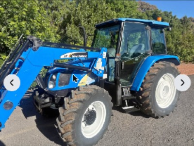
2002 New Holland TL100A cab with Challenge AP30 loader — decent link
$48,500 (marked Sale pending on Facebook) · Young, NSW (260km)
hours not stated · 98hp · Challenge AP30 FEL · new turbo and injectors, fresh oils and filters · tyres 80%
Cab, loader and 98hp in band at $48,500, but 24 years old and hours not stated; ask for hours first.
Facebook Marketplace · first seen 2026-11-10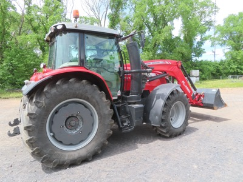
Massey Ferguson 7614 with front-end loader and bucket — decent link
price TBC (no bid shown before the sale; clearing sale 12 Nov 8:30am AEDT) · Little Billabong (Holbrook), NSW (300km)
1,103 hours · 140hp · FEL with bucket · year not stated
One owner, serviced and low hours, so it clears every must on paper, but it sits at the 140hp top of the band and may sell above $80k.
AuctionsPlus (Nutrien Holbrook) · ends 2026-11-12 · first seen 2026-10-25- 2015 Kubota M9540 cab, no loader — stretch link
$30,000 (plus GST) · Griffith, NSW (100km)
no loader shown · 95hp class · hours in photos only, not stated in text · new PTO clutch ($4,000) · tyres 90%, 2 owners
Cheap, tidy and 100km away, but no loader; only worth a call if a loader can be fitted for well under $47k.
Facebook Marketplace · first seen 2026-11-10
- 2019 Massey Ferguson 7614 FWA with FEL — stretch link
price TBC (no bid shown; 2% buyer premium; auction 12 Nov 4:00pm AEDT) · Dubbo, NSW (420km)
850 hours · 2019 · FEL per listing title · hp not stated on lot page
Very low hours and late model, but about 420km, just past the 400km limit, and likely over $80k.
AuctionsPlus · ends 2026-11-12 · first seen 2026-11-10
recently gone: 2015 Kioti PX1002 100hp 4WD cab with KL901 loader, slasher, post-hole digger at $52,500 (marked sold on AuctionsPlus; price not shown) (sold); 2010 McCormick T-Max 100 92hp 4WD with loader and 4-in-1 bucket, 1,375 hours at $72,600 (private listing; GST not mentioned) (sold)
Portable home, container or similar, 2+ rooms with bathroom
link
$5,000 to $30,000 · within 400km of Darlington Point, NSW
must have: bathroom; at least 2 rooms
nice to have: kitchen or kitchenette; container-based or relocatable build; ready to transport
Price band tracks quality: 5k for a rough site hut, 30k for a finished container home. Transport cost is worth noting separately.
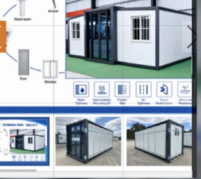
Expanding container cabin, 2 bed, full bathroom, base unit (new) — strong link
$19,990 (plus GST if applicable) · Cobram, VIC (180km)
2 bedrooms · full bathroom, plumbed ready to connect · expands to 5.9m x 6.2m · new, in stock, inspection welcome · electrical not included · dealer: GV Containers and Haulage, free delivery within 30km of Cobram, delivery further out at extra cost
New 2-bed with a full bathroom, in stock 180km away. GST could take it close to $22k and it still needs wiring, but it is the cheapest new 2-bed nearby.
Facebook Marketplace · first seen 2026-09-30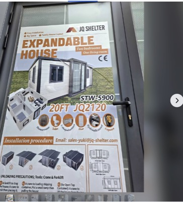
New expanding container cabin, 2 bed, bathroom, kitchen — strong link
$24,000 (up from $22,990) · Cobram, VIC (180km)
2 bedrooms · full bathroom · L-shaped kitchen cabinets, stainless sink, mixer tap · expands to 5.9m x 6.4m · double glazed windows · electrical and plumbing ready for connection · new, in stock, inspection 7 days · free delivery within 30km of Cobram
Premium model from the same Cobram dealer with the kitchen fitted; it clears every must and every prefer at 180km.
Facebook Marketplace · first seen 2026-09-28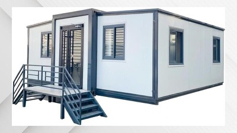
New 20ft expandable granny flat, 2 bed, bathroom, kitchenette — decent link
$18,000 (Pickup only. Same dealer has a near-identical ad saying $27,000 + GST, so confirm $18k) · Seymour, VIC (330km)
2 bed · bathroom · kitchenette · 20ft expandable, 2.4m ceiling, double glazed
Cheapest new 2-bed with bathroom in range, but the dealer's other ads are priced higher, so check the price first.
Gumtree · first seen 2026-10-14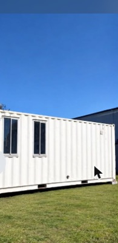
2010 homemade container home, bunk room, kitchenette, lounge, toilet and shower — decent link
$19,000 (transport not included) · Young, NSW (250km)
2010 build, homemade · bunk bed room · kitchenette with lounge and dining · toilet and shower · sold as transportable · size not stated
Clears the bathroom and two-room bar for $19k inside 250km, but it is homemade and the listing is thin, so inspect it.
Facebook Marketplace · first seen 2026-10-27- Portable accommodation building, 6m x 3m, with bathroom — stretch link
$15,000 · Shepparton, VIC (260km)
6m x 3m · bathroom (per listing) · used, like new, no leaks · tilt-tray delivery can be arranged · number of rooms not stated
Solid 6m hut with a bathroom and delivery on offer, but the ad does not say it has two rooms.
Facebook Marketplace · first seen 2026-11-02
recently gone: EXEQ L0206 expandable container house with ensuite (unused) at $13,441 (listing marked removed on Machines4u) (gone)
Offset discs, 24-32 plate, for a 90-130hp tractor
link
open on price · within 400km of Darlington Point, NSW
must have: 24 to 32 plates; maximum 3.0 to 3.5 m working width; matched to 90-130 hp
nice to have: bearings in good order; plates with life left, not dished out; local within 400km, or an overseas maker that ships to Australia
Width is the hard constraint: anything over 3.5 m is too much for the tractor and too wide to cart. Overseas makers (e.g. made in China, Italy, Turkey, Brazil) count if they ship to Australia: quote price plus freight and import costs.
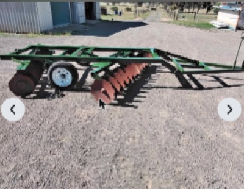
26-plate trailing offset discs, no ram — decent link
$2,250 · Baddaginnie, VIC (330km)
26 plates · no hydraulic lift ram · width not stated · used, good condition per seller
A third of the price of the next-cheapest disc; budget a lift ram and check width is under 3.5 m.
Facebook Marketplace · first seen 2026-11-08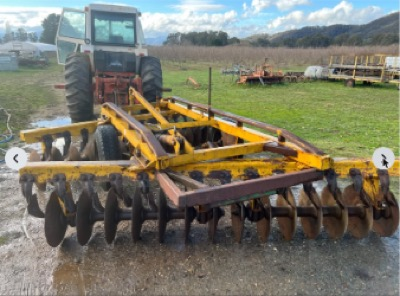
Baldan CRSG28 28-plate trailing offset disc — decent link
$7,000 (cash on pickup only) · Myrtleford, VIC (320km)
28 plates, owned since new · about 2.4 t, oil bath bearings · seller says it needs about 130hp; pulled with a Case 1370 · plates worn: seller quoted $135+GST a plate to replace (about $3,800+GST for 28) · width not stated by seller; a WA dealer's new CRSG28 lists 3,200 mm and 125-140hp · Serafin (Yoogali) lists a new CRSG 28+1 at $24,400+GST · buyer must load and cart it
A proper heavy Brazilian 28-plate at a third of new, but it sits at the top of the hp range and needs about $3,800 in plates to bite like new.
Facebook Marketplace · first seen 2026-10-13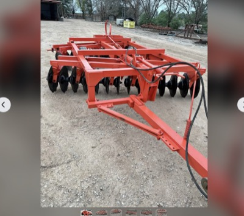
Blue Line 28-plate offset disc, new bearings and ram seals, width not stated — decent link
$7,500 (was $13,500) · Griffith, NSW (40km)
28 plates, heavy duty · new lift ram seals · new wheel bearings · disc gang bearings replaced as required · width and model not stated; no Blue Line maker spec found online to cite · hp rating not stated · listed 6 weeks
Closest used 28-plate, with the bearing work done. Measure the width and check plate wear in person.
Facebook Marketplace · first seen 2026-09-28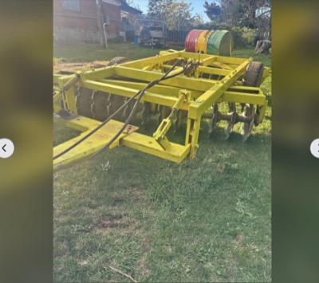
Heavy duty Australian made 24-plate offset discs — decent link
$7,700 (negotiable, includes GST, was $8,800) · Orange, NSW (390km)
24 plates · 2.5 m cut (seller) · front gang of 12 discs just replaced with new bearings, receipt over $5,000 · rear discs about 60% · hydraulic lift, truck tyres · seller says it needs at least 90hp · maker and model not stated · listed 5 weeks
Meets every must and the front gang was just redone, but it is at the edge of the 400 km range and the rear plates are at about 60%.
Facebook Marketplace · first seen 2026-09-30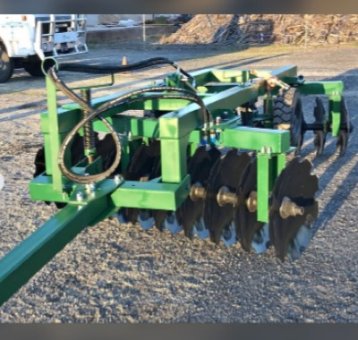
New 1BZ-2.5 24-plate trailing offset disc, crated — decent link
$7,890 (listed as discounted) · Seymour, VIC (330km)
24 plates, 660 mm discs · listing's own spec table gives 2,500 mm working width (2,810 mm overall); the text above it says 1,900 mm · listing rates it for 70-100hp · hydraulic wheel lift · new, comes unassembled in an iron crate
Brand new for the price of a used set, but it is a light Chinese build rated to 100hp and needs assembling.
Facebook Marketplace · first seen 2026-10-12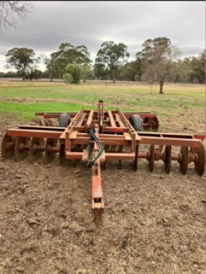
Jarrett 28-plate offset discs, hardly used — decent link
$9,000 (ONO; page shows US$9,000 but the seller's text says $9000 ono) · Katamatite, VIC (200km)
28 plates, Jarrett; model not named and no Jarrett spec found online to cite · seller says excellent condition, hardly used · width not stated · hp rating not stated · bearing and plate wear not stated
A hardly-used 28-plate for $9,000 about 200 km away, but the listing is three lines long: get the width and hp before driving.
Facebook Marketplace · first seen 2026-10-14
Tree root ripper, ideally a single deep tyne
link
open on price · within 400km of Darlington Point, NSW
must have: built for ripping tree roots: heavy shank, deep rip, not a general tillage or chisel ripper; matched to 90-130 hp
nice to have: single tyne; 3-point linkage; shear-bolt or spring release protection; replaceable points and shin; local within 400km, or an overseas maker that ships to Australia
One deep, heavy tyne pulls deepest for the horsepower and is what root ripping needs; multi-tyne tillage rippers are out. Overseas makers (China, Italy, Turkey, NZ etc.) count if they ship to Australia: quote price plus freight and import costs, and mark distance as overseas.
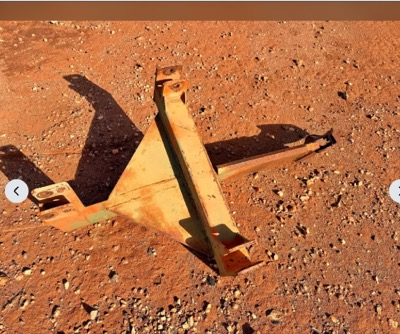
Linkage single-tyne ripper, North Yalgogrin — decent link
$250 (reduced from $350) · West Wyalong, NSW (100km)
single tyne · 3-point linkage · used, good · ripper tip bent · located North Yalgogrin · no hp or shank size stated
Closest unit to home and still $250; the bent tip needs a look, and the listing gives no hp or shank size.
Facebook Marketplace · first seen 2026-10-02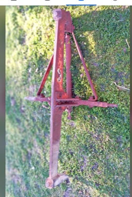
Massey Ferguson single-tyne deep ripper, 3PL (two available) — decent link
$270 ($270 each, sold separately) · Crookwell, NSW (390km)
single tyne · 3-point linkage · two units: one lighter 1.4 m with top link, one heavy-duty large solid frame · heavy one has some rear-frame damage, still works · pick-up Crookwell
The heavy-frame unit is the pick at $270, but it has frame damage and is 390 km away; price unchanged on 18 Oct.
Facebook Marketplace · first seen 2026-10-08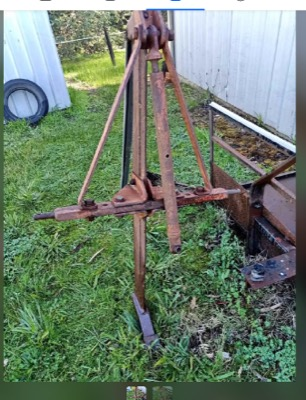
Massey Ferguson single-tine ripper, 3PL — decent link
$350 ($350 firm) · Bendigo, VIC (310km)
single tine · 3-point linkage · heavy A-frame with cross-bar · used, good working condition · no hp or depth stated · listed 16 weeks ago
Undamaged MF single tine at $350 firm, but no hp or depth stated; unchanged after 16 weeks.
Facebook Marketplace · first seen 2026-10-10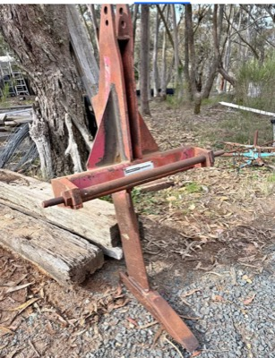
Jarrett single-tyne ripper with pipe layer, 3PL — decent link
$600 · Bywong, NSW (380km)
Jarrett brand, part of an estate sale · single tyne on a tall gusseted A-frame (from photo) · pipe layer attachment per title · used, good · no hp, shank size or depth stated · listed 4 weeks ago, pick-up Bywong
A proper single-tyne build from a known Australian maker at under half the new price, still $600; no hp rating and about 380 km away.
Facebook Marketplace · first seen 2026-10-14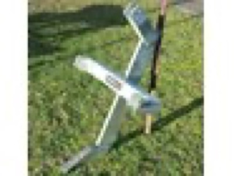
Daken 86000DC single-tine ripper, up to 100hp (new) — decent link
$995 (inc GST, freight extra) · Coopers Plains, QLD (ships)
up to 100hp, Cat 1/2 · 150 x 50 mm leg · 800 mm max depth · reversible point · no shear bolt listed
800 mm rip for $995, deepest of the new units, but rated only to 100hp and freight is extra.
Trade Farm Machinery · first seen 2026-10-29
recently gone: Farm-Aid FA106 heavy duty single-tine ripper (new) at $1,145 (page no longer reachable (403)) (gone)
Diesel storage, 200 to 1,000 L: fuel cart, drum, or tank and stand
link
open on price · within 400km of Darlington Point, NSW
must have: built for diesel storage: fuel cart or trailer, fuel drum, or fuel tank with stand; 200 to 1,000 L capacity
nice to have: pump, hose and nozzle included (12V or hand pump); stand high enough to gravity-feed a tractor; steel or diesel-rated poly, self-bunded or double-skinned; lockable cap, fuel filter, meter; local within 400km
Any of the three formats counts: a towable fuel cart, a drum with a pump, or a tank on a stand. Second-hand tanks should be clean and leak-free; say if the seller doesn't confirm that. No price band set, so new benchmarks are useful alongside used finds.
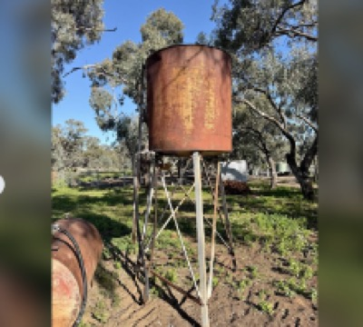
About 1000 L steel diesel tank on raised stand, gravity feed — strong link
$500 · Hay, NSW (130km)
about 1,000 L · heavy steel tank on elevated stand · gravity-fed, outlet, valve and hose fitted · surface rust, one ding · buyer removes
The tank-and-stand option for $500: gravity feeds a tractor with no pump, but it's rusty, so check inside for scale and leaks.
Facebook Marketplace · first seen 2026-10-22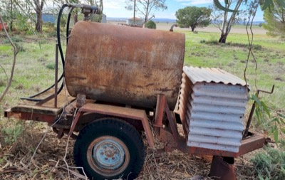
Mobile fuel trailer, 1000 L, 12V pump — strong link
$770 ($700 + GST) · Warburn, NSW (30km)
1000 L · towable trailer · 12V electric pump · custom made, used · listed 2 Jun 2026
1000 L towable cart with a 12V pump, 30km away, at under half the price of the Coleambally cart; listed in June, so ring to check it's still there.
Farm Tender · first seen 2026-10-22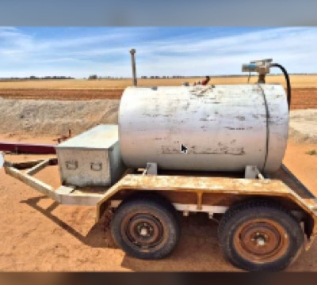
1000 L fuel cart with electric pump and toolbox — strong link
$1,800 (down from $1,980) · Coleambally, NSW (40km)
1000 L · tandem-axle trailer · electric pump · toolbox · used - good, bought but not needed
Tidy tandem 1000 L cart with pump, 40km away; listed 9 weeks, so there may be room on price.
Facebook Marketplace · first seen 2026-10-22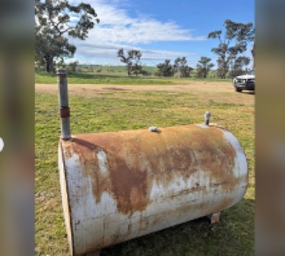
850 L diesel tank — decent link
$400 · Lockhart, NSW (190km)
about 850 L · in diesel use until a month ago · used - good · no pump or stand stated
Cheapest working diesel tank found, in use until last month, but rusty, bare and 190km away.
Facebook Marketplace · first seen 2026-10-22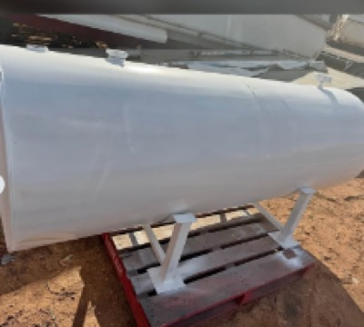
1000 L steel fuel tank on skids — decent link
$800 (ONO) · Griffith, NSW (40km)
1,000 L · petrol or diesel · used - good · no pump or stand stated
Clean-looking 1000 L tank 40km away, but bare: budget for a pump or a stand.
Facebook Marketplace · first seen 2026-10-22
recently gone: Tow-behind fuel tank, 1000 L, Honda motor pump at price TBC (clearing sale closed 5 Nov 2026) (gone)
Sorted
- Stick rake for the Lovol P5130 front-end loader — Stick rake purchased (November 2026)
Hunt log
all 49 runs
Prices are what the seller or auction house is asking, before premium, transport or GST unless noted. Verify everything before you commit money.
Nothing here is financial advice. Holdings and opinions are my own; the "agent" sections are written by an automated research skill and may be wrong. Built 2026-11-11 13:39 UTC.